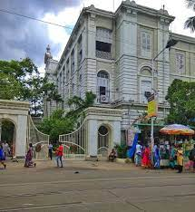

Early Life
Naren (as he was popularly known as) was born at his ancestral home at 3 Gourmohan Mukherjee Street in British Capital Calcutta.
Son of Vishwanath Dutta, who was an attorney at the Calcutta High Court and a devout housewife Bhubaneswari Devi, Naren's upbringing was influenced by his father's liberal thinking and his mother's spiritual and religious temperament.
Education
Swami Vivekananda was intelligent since childhood. He was the only student to have received first division marks in Presidency College entrance examination. An avid reader of various subjects, including religion, history, social science, art and literature, he also had profound interest in Puranas, Vedas and Upanishads.
Travel and philosophy
He travelled to the West bearing HIndu philosophy and introducing Indian heritage, culture and philosophy to the West. Of his many lectures, the one in Chicago at the Parliament of the World's Religion is the most revered. Here, he gave a brief speech representing India and Hinduism.
With his introductory speech, satrting "Sisters and brothers of America", Swami Vivekananda earned a 2-minute standing ovation from the crowd of seven thousand.
Death
Swami Vivekananda attained Mahasamadhi on July 4, 1902. On this day, he woke up early, went to Belur Math and meditated there for three hours. After taking classes and discussing a planned Vedic college in Ramakrishna Math, he went to his room at 7 pm and asked not be disturbed.